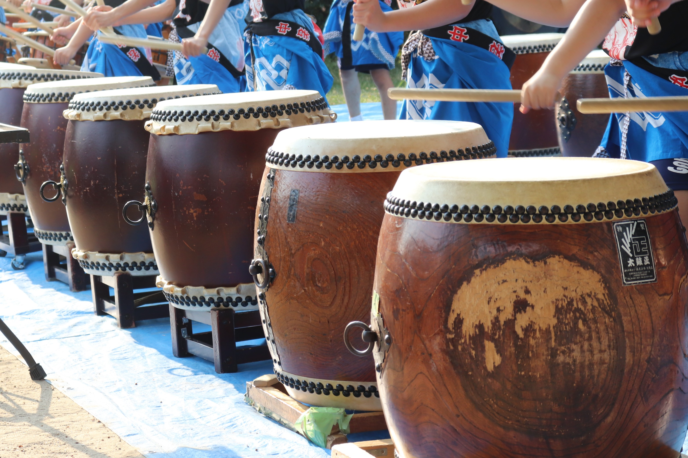
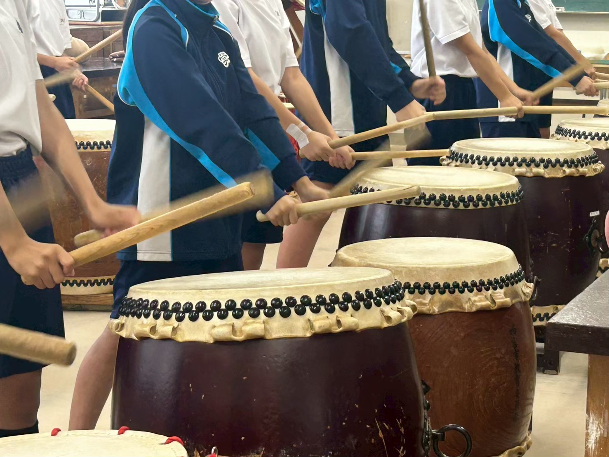
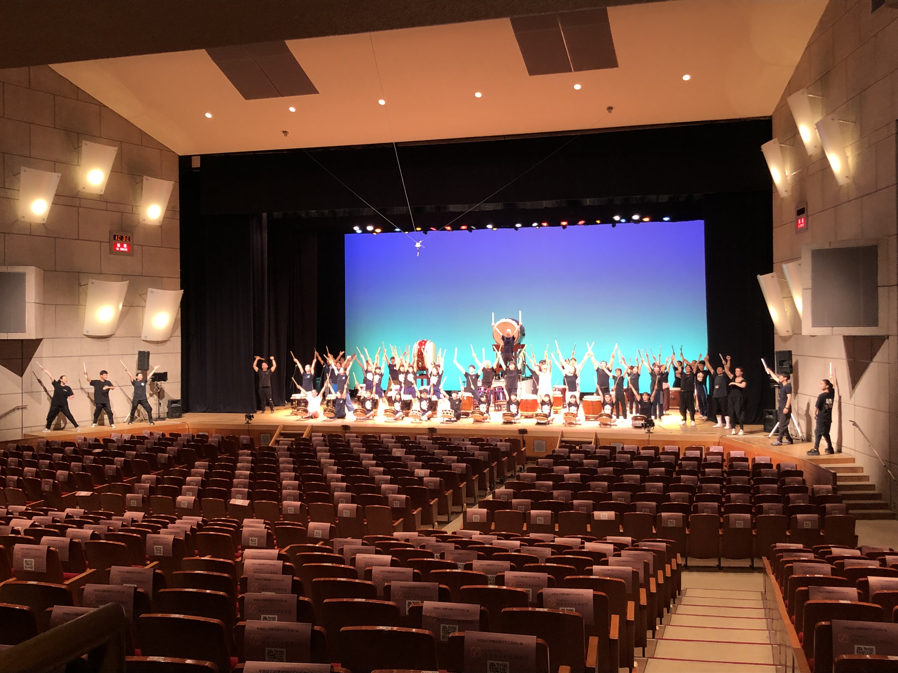

卒業生の顔合わせを行いました
技術指導を担う卒業生で顔合わせを行いました。より良いプレみや「学文太鼓」にするべく、有意義な時間を持つことができました。
ACTIVITIES
練習風景やイベント出演の様子を写真と合わせてお届けします。



技術指導を担う卒業生で顔合わせを行いました。より良いプレみや「学文太鼓」にするべく、有意義な時間を持つことができました。
現部員を対象に、プレみや「学文太鼓」の体験会を実施しました。普段と違った練習方法に、真剣な眼差しで参加してくれました。
40名ほどの方にお越しいただき、学文太鼓の雰囲気を体感していただきました。